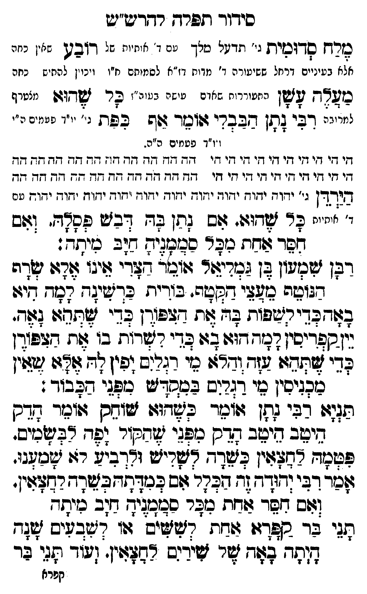

Neue Klartextfassung
מלח סדומית [גי' היכל מלך עם ד' אותיות אל] רובע [עלין כתר ולאה בעיינים דרחל שעטרוכה ד' אמות דז"א למתקם מ"ז ויכוין להסיר כחם [?]] מעלה עשן [כמשערות שהם שחק כעור"ז [?]] כל שהוא [מעופף לתבונה] רבי נתן הבבלי אומר אף כפת [גי' י"ד פעמים ה"י וי"ד פעמים ה"ה] === טבלה === ה"י ה"י ה"י ה"י ה"י ה"י ה"י ה"ה ה"ה ה"ה ה"ה ה"ה ה"ה ה"ה ה"י ה"י ה"י ה"י ה"י ה"י ה"י ה"ה ה"ה ה"ה ה"ה ה"ה ה"ה ה"ה === סוף טבלה === הירדן [ג' יהוה יהוה יהוה יהוה יהוה יהוה יהוה יהוה יהוה יהוה יהוה יהוה עם ד' אותיות] כל שהוא. אם נתן בה דבש פסלה. ואם חסר אחת מכל סממניה חיב מיתה: רבן שמעון בן גמליאל אומר הצרי אינו אלא שרף הנוטף מעצי הקטף. בורית כרשינה למה היא באה כדי לשפות בה את הצפורן כדי שתהא נאה. יין קפריסין למה הוא בא כדי לשרות בו את הצפורן כדי שתהא עזה והלא מי רגלים יפין לה אלא שאין מכניסין מי רגלים במקדש מפני הכבוד: תניא רבי נתן אומר כשהוא שוחק אומר הדק היטב היטב הדק מפני שהקול יפה לבשמים. פטמה לחצאין כשרה לשליש ולרביע לא שמענו. אמר רבי יהודה זה הכלל אם כמדתה כשרה לחצאין. ואם חסר אחת מכל סממניה חיב מיתה: תני בר קפרא אחת לששים או לשבעים שנה היתה באה של שירים לחצאין. ועוד תני בר
Original gegen neue OCR · Niqqud für Vergleich ausgeblendet
Original
מלח סדומית [גי' היכל מלך עםK157-001 ד' אותיות אל] רובע [עלין כתר ולאה בעייניםK157-002 דרחל שעטרוכהK157-003 ד' אמותK157-004 דז"א למתקם מ"זK157-005 ויכוין להסיר כחם ] מעלה עשן [כמשערות שהם שחק כעור"ז ] כל שהוא [מעופף לתבונה] רבי נתן הבבלי אומר אףK157-006 כפת [גי' י"ד פעמים ה"י וי"ד פעמים ה"ה] === טבלה === ה"י ה"י ה"י ה"י ה"י ה"י ה"י ה"ה ה"ה ה"ה ה"ה ה"ה ה"ה ה"ה ה"י ה"י ה"י ה"י ה"י ה"י ה"י ה"ה ה"ה ה"ה ה"ה ה"ה ה"ה ה"ה === סוף טבלה === הירדן [ג' יהוה יהוה יהוה יהוה יהוה יהוה יהוה יהוה יהוה יהוה יהוה יהוה עם ד' אותיות] כל שהוא. אם נתן בה דבש פסלה. ואם חסר אחת מכל סממניה חיב מיתה:K157-007 רבן שמעון בן גמליאל אומר הצרי אינו אלא שרף הנוטף מעצי הקטף. בורית כרשינה למה היא באה כדי לשפות בה את הצפורן כדי שתהא נאה.K157-008 יין קפריסין למה הוא בא כדי לשרות בו את הצפורן כדי שתהא עזה והלא מי רגלים יפין לה אלא שאין מכניסין מי רגלים במקדש מפני הכבוד: תניא רבי נתן אומר כשהוא שוחק אומר הדק היטב היטב הדק מפני שהקול יפה לבשמים. פטמה לחצאין כשרה לשליש ולרביע לא שמענו. אמר רבי יהודה זה הכלל אם כמדתה כשרה לחצאין. ואם חסר אחת מכל סממניה חיב מיתה: תניK157-009 בר ∅K157-010 קפרא אחת לששים או לשבעים שנה היתה באה של שירים לחצאין. ועוד תני ברK157-011
OCR · fehlbar
סידוך תפרח ר-דדיע"ש לורח 0דגסית ' תדישל טלך טסK157-001 ד' אחיויז של דובטך שאין כחה אלא בעינייםK157-002 דרחל ששיעורהK157-003 ד' מדוחK157-004 דז"א לסמותם ח"ןK157-005 ויכוין להתיש כחה כל6- לזן היזטור ות שאדם טי שר בטוה"ז פר זשדו:ו מצטרף י"י. דבי צתן מבבדי ו:ומד צ(שK157-006 כפת ( ' ' זני9 נ' ו ז"ד פטמים ה"ה. זי חי די וזי די -י ח' די חי י חח יז זח דד - . זד זח דד חח חד גי חי חי די די חי די זי די זי דד דד חד. זד. דד ד( -- 7 חד זד בירדן גי' ידו דש יזוח יזזו- יחודש ימוד ידזו- ידוך ידזז"דז יחוד. ידוך עח י' י"יויי פד זל[דוג. גוש (0ן דג דבזש לסא-. (שס גבך זזדת ניבכ בגנ:י- דזב נוחר :K157-007 רבן ישנולין שן (ניציר זוגו דצרי זוג צו: די: דגושה כזשלי ששה. בזריח כדישיצגד חמד -יג: גגרבד-קבפי. גת ז -צ ן בר. בת (ז-. דזספרישין דבד דו: בג: בדי רשרות בו צזת פודן גדי זשיזחזי עזד והגו טי רגרש (פי] צ זוגוK157-008 יין מכגיבין גי דגרש בדש גלני ג3בוך . פלל רשי שתן שוטר פילדוד זשושס זווכוך תדס נישב שיצלב גדק נלוז (דקיר" וצר דבישצ(ב. בנת נשין גז(ד- גאר וררבזז יי גכי:י נרבי לנדד לברנזזשבטדגדבישדדרמצניי. זם דשר גחת מבר כביב:י- דב ניחח ח:יK157-009 בר קלךי: יחת דשישיס זיו דיגבאים ש(ד דנדד"לזח צר ירב נבזזייז (ד ז: ציK157-010 קפרא ∅K157-011